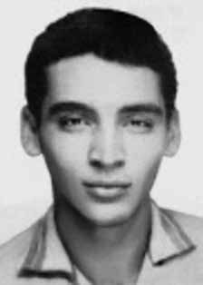

José
Campos
Barreto
CIRCUNSTÂNCIAS DA MORTE
José Campos Barreto foi morto por agentes do Estado brasileiro na tarde do dia 17 de setembro de 1971, na região de Brotas de Macaúbas, sertão da Bahia. O episódio sinaliza o fim de uma das operações mais ofensivas comandadas pelos órgãos de repressão da ditadura brasileira para localizar e executar o guerrilheiro Carlos Lamarca: a Operação Pajussara. De acordo com a versão oficial, José Campos Barreto teria morrido junto com o ex-capitão Carlos Lamarca, em um tiroteio contra as forças de segurança. Essa versão, amplamente difundida, foi contestada por grupos de familiares de mortos e desaparecidos políticos desde a década de 1970. A partir das pesquisas realizadas, por intermédio do acesso a novos documentos e às informações apuradas no âmbito da Comissão Nacional da Verdade, torna-se evidente que a versão divulgada à época dos fatos não se sustenta. Poucos anos antes, José Campos Barreto havia sido uma relevante liderança sindical entre os metalúrgicos de Osasco (SP). Em julho de 1968, Zequinha foi um dos líderes na greve que parou a fábrica onde trabalhava, a Cobrasma, quando a fábrica foi cercada por forças policiais. José Campos Barreto foi preso juntamente com mais de 400 trabalhadores e passou 98 dias nos cárceres do Departamento de Ordem Política e Social (DOPS/SP). Libertado por meio de habeas corpus, passou a viver na clandestinidade, militando na Vanguarda Popular Revolucionária (VPR). No início de 1970, já militante no Movimento Revolucionário 08 de Outubro (MR-8) retornou ao sertão da Bahia, para implantar um movimento de guerrilha rural, que contaria com a participação de Lamarca. Zequinha ficou responsável por montar a estrutura da segurança do líder guerrilheiro. A casa da família dos Campos Barreto tornou-se importante ponto de referência dos deslocamentos de Zequinha e de Lamarca na região. A operação militar que logrou localizar e executar Zequinha e Lamarca se inseriu em uma complexa trama de ações militares. A montagem da Operação Pajussara começou a ganhar contornos mais específicos com a descoberta do diário de Lamarca em poder de militantes do MR-8 e, com a prisão de outros membros da organização, em Salvador (BA). Valendo-se da tortura e da coação, os órgãos de repressão conseguiram dados que os levaram a identificar a região de Buriti Cristalino como provável esconderijo de Lamarca. O Comandante do DOI-CODI em Salvador e Chefe da 2ª Seção do Estado-Maior da 6ª Região Militar, major Nilton de Albuquerque Cerqueira, reuniu um efetivo de 215 homens das Forças Armadas, com o apoio de agentes da Polícia Federal, da Polícia Militar da Bahia e do Departamento de Ordem Política e Social (DOPS) e, no dia 28 de agosto de 1971, invadiu a região de Buriti Cristalino. Na propriedade da família de José Campos Barreto, a ação foi violenta. Olderico Campos, um dos irmãos de José, foi ferido no rosto. Otoniel Campos, de 20 anos, foi morto com uma rajada de metralhadora. Com os dois irmãos fora de combate, os homens comandados pelo major Nilton Cerqueira montaram guarda na propriedade e iniciaram o interrogatório de Olderico, que, apesar de ferido, foi torturado. Algum tempo depois, o lavrador José de Araújo Barreto, pai de Zequinha, Olderico e Otoniel, retornou à casa e encontrou o seguinte cenário: a casa ocupada por forças de segurança, um de seus filhos morto e outro ferido, sendo torturado. Apesar de seus 64 anos, também foi submetido a torturas pelos agentes de repressão do Estado. José Barreto e Carlos Lamarca abandonaram o acampamento que ocupavam e empreenderam nova marcha, deslocando-se pelo interior do sertão. Na fuga, que durou 20 dias, os dois guerrilheiros percorreram aproximadamente 300 km. Exaustos, feridos e desorientados pela sede e pela fome, os dois homens alcançaram o pequeno povoado de Pintada. De acordo com depoimento de Olival Campos Barreto, irmão de Zequinha, o paradeiro dos militantes foi informado por um parente distante da família, Antônio de Virgílio, ao juiz do Fórum de Brotas de Macaúbas, Antônio Barbosa, que por sua vez os denunciou a agentes da 6ª Região Militar do Exército: […] a gente só ficava ouvindo, ó, Zequinha e Lamarca passou em tal lugar, passaram em Ibotirama, passaram no Mocambo, passaram não sei aonde. Só que, por infelicidade, Zequinha foi passar num local que chama Três Reses, onde têm parentes nossos, e um infeliz, lá dos Três Reses, que é até primo da gente… Então, esse rapaz [Antônio de Virgílio] foi avisar, em Brotas, que Zequinha tinha passado lá, com o Lamarca. Como o Exército tinha oferecido esses prêmios, dinheiro, pra quem denunciasse, esse rapaz foi avisar em Brotas. E o juiz [Antônio Barbosa], lá em Brotas, pega um carro e vai até Seabra, e vai ligar, lá pra 6ª Região do Exército, pra voltarem. Aí, eles já voltaram com certeza de que eles já estavam lá.i Por volta das 16 horas do dia 17 de setembro, enquanto descansavam à sombra de uma baraúna, Lamarca e Zequinha foram surpreendidos pela tropa comandada por Nilton Cerqueira. Eles estavam exaustos e não ofereceram qualquer resistência à tropa, e foram executados. No próprio relatório da operação Pajussara, está descrito que Zequinha Barreto correu e tentou jogar uma pedra, quando foi alvejado e morreu. Lamarca sequer tentou fugir e recebeu tiros de várias direções, inclusive pelas costas. Sobre as mortes de Lamarca e Zequinha Barreto, Olival Barreto deu o seguinte depoimento: Comissão Nacional da Verdade – Olival, nessa época que os corpos de Zequinha e Lamarca foram levados pra lá – parece que foi para exposição pública – você chegou a ver, ou não? Olival Campos Barreto – Não, porque eu estava no Buriti Cristalino, que a distância de Brotas é de 18 km, não é. Quando eles morreram, lá em Pintada, então os corpos foram trazidos pra Brotas, e colocados no campo de futebol, para o povo ver. Então, eu não cheguei a vê-los, mortos, porque eu estava no Buriti. Fiquei sabendo no dia seguinte, da morte deles. Mas o pessoal, que viu, me relatou muita coisa. Comissão Nacional da Verdade – Quem viu, falou o quê? Como é que… Olival Campos Barreto – Por exemplo, essa mesma pessoa que levou a notícia da morte do Zequinha, que é o Sr. Zé Novais, ele me disse que presenciou os corpos no chão, que eles chutavam, tem um cara, lá, que participou da Operação, que ajudou a matá-los, que era o Caribé, Dalmar Caribé… Comissão Estadual da Verdade Rubens Paiva – Dalmar está vivo. Olival Campos Barreto – Está vivo, em Salvador… E diz que ele falava assim: “Nesse, aqui, eu acertei um…”. Entendeu? Diz que acertou um tiro, assim, diz que acertou um tiro no Zequinha. E esse tipo de coisas, assim. O Zé Novais me disse que uma pessoa de Brotas, que estava com ele, chorou, uma pessoa do lugar chorou, quando os viu no chão, e ele pegou, e levou ele embora, com medo de uma repressão. Então, a gente escuta muita coisa. Agora, por último, fiquei sabendo, por uma pessoa lá de Brotas, que disse que, os caixões que fizeram pra eles, era para colocar os dois num caixão só, e, como Zequinha era um pouco maior que o Lamarca, diz que foi colocado, assim, aos pontapés, o cadáver, para caber dentro do caixão. Essas coisas, assim, tudo que a gente ouviu falar. Eu, felizmente, eu não queria ter visto eles, ali. Acho que não teria condição de ver. De acordo com informações da família, os corpos de Zequinha e de Lamarca foram levados para Salvador, onde permaneceram no Instituto Médico Legal até o dia 25 de setembro, quando foram sepultados no cemitério de Campo Santo. A família reivindica, ainda hoje, a localização e o traslado dos restos mortais de Zequinha para o “Memorial dos Mortos”, em Ipupiara (BA).ii A morte de José Campos Barreto é também relatada no capítulo 13, Casos Emblemáticos, deste Relatório.
José Campos Barreto was killed by agents of the Brazilian State on the afternoon of September 17, 1971, in the Brotas de Macaúbas region, in the backlands of Bahia. The episode signals the end of one of the most offensive operations commanded by the Brazilian dictatorship's repression bodies to locate and execute the guerrilla Carlos Lamarca: Operation Pajussara. According to the official version, José Campos Barreto died together with former captain Carlos Lamarca, in a shootout against security forces. This version, widely disseminated, has been contested by groups of family members of political dead and disappeared since the 1970s. Based on the research carried out, through access to new documents and information collected within the scope of the National Truth Commission, it becomes clear that the version published at the time of the events is not sustainable. A few years earlier, José Campos Barreto had been an important union leader among metalworkers in Osasco (SP). In July 1968, Zequinha was one of the leaders in the strike that stopped the factory where he worked, Cobrasma, when the factory was surrounded by police forces. José Campos Barreto was arrested along with more than 400 workers and spent 98 days in the prisons of the Department of Political and Social Order (DOPS/SP). Released through habeas corpus, he began to live in hiding, participating in the Popular Revolutionary Vanguard (VPR). At the beginning of 1970, already a militant in the Revolutionary Movement 08 de Outubro (MR-8), he returned to the backlands of Bahia, to implement a rural guerrilla movement, which would include the participation of Lamarca. Zequinha was responsible for setting up the guerrilla leader's security structure. The Campos Barreto family home became an important reference point for Zequinha and Lamarca's travels in the region. The military operation that managed to locate and execute Zequinha and Lamarca was part of a complex web of military actions. The assembly of Operation Pajussara began to take on more specific contours with the discovery of Lamarca's diary in the possession of MR-8 militants and, with the arrest of other members of the organization, in Salvador (BA). Using torture and coercion, the repression agencies obtained data that led them to identify the Buriti Cristalino region as Lamarca's likely hiding place. The Commander of DOI-CODI in Salvador and Chief of the 2nd Section of the General Staff of the 6th Military Region, Major Nilton de Albuquerque Cerqueira, gathered a force of 215 men from the Armed Forces, with the support of agents from the Federal Police, the Military Police of Bahia and the Department of Political and Social Order (DOPS) and, on August 28, 1971, invaded the region of Buriti Cristalino. On José Campos Barreto's family property, the action was violent. Olderico Campos, one of José's brothers, was injured in the face. Otoniel Campos, 20 years old, was killed by a machine gun. With the two brothers out of combat, the men commanded by Major Nilton Cerqueira set up guard on the property and began interrogating Olderico, who, despite being injured, was tortured. Some time later, farmer José de Araújo Barreto, father of Zequinha, Olderico and Otoniel, returned to the house and found the following scenario: the house occupied by security forces, one of his sons dead and another injured and being tortured. Despite being 64 years old, he was also subjected to torture by state repression agents. José Barreto and Carlos Lamarca abandoned the camp they occupied and embarked on a new march, moving through the interior of the backlands. During their escape, which lasted 20 days, the two guerrillas covered approximately 300 km. Exhausted, injured and disoriented by thirst and hunger, the two men reached the small town of Pintada. According to the testimony of Olival Campos Barreto, Zequinha's brother, the whereabouts of the militants were reported by a distant relative of the family, Antônio de Virgílio, to the judge of the Brotas de Macaúbas Forum, Antônio Barbosa, who in turn reported them to agents from the 6th Military Region of the Army: […] we just kept listening, oh, Zequinha and Lamarca passed by such a place, they passed by Ibotirama, they passed by Mocambo, I don't know where. But, unfortunately, Zequinha went to a place called Três Reses, where they have relatives of ours, and an unfortunate person, from Três Reses, who is even our cousin... So, this guy [Antônio de Virgílio] went to tell us, in Brotas, that Zequinha had been there, with Lamarca. As the Army had offered these prizes, money, to anyone who reported it, this guy went to notify Brotas. And the judge [Antônio Barbosa], there in Brotas, takes a car and goes to Seabra, and will call the 6th Army Region there, to come back. Then, they returned, certain that they were already there.i Around 4 pm on September 17th, while resting in the shade of a baraúna, Lamarca and Zequinha were surprised by the troop commanded by Nilton Cerqueira. They were exhausted and did not offer any resistance to the troops, and were executed. In the Pajussara operation report itself, it is described that Zequinha Barreto ran and tried to throw a stone, when he was shot and died. Lamarca didn't even try to escape and received shots from several directions, including in the back. Regarding the deaths of Lamarca and Zequinha Barreto, Olival Barreto gave the following statement: National Truth Commission – Olival, at that time when the bodies of Zequinha and Lamarca were taken there – it seems that it was for public display – did you get to see it, or not? Olival Campos Barreto – No, because I was in Buriti Cristalino, which is 18 km from Brotas, it is not. When they died, there in Pintada, the bodies were brought to Brotas, and placed on the football field, for the people to see. So, I didn't get to see them, dead, because I was in Buriti. I found out the next day about their deaths. But the people who saw it told me a lot. National Truth Commission – Who saw it and said what? How come… Olival Campos Barreto – For example, the same person who brought the news of Zequinha's death, who is Mr. Zé Novais, he told me that he witnessed the bodies on the ground, that they were kicking, there is a guy there, who participated in the Operation, who helped kill them, who was Caribé, Dalmar Caribé… State Truth Commission Rubens Paiva – Dalmar is alive. Olival Campos Barreto – He is alive, in Salvador… And he says that he said: “In this one, here, I hit one…”. Did you understand? He says he shot him, so he says he shot Zequinha. And that kind of thing, like that. Zé Novais told me that a person from Brotas, who was with him, cried, a person from the place cried, when he saw them on the ground, and he picked them up, and took them away, afraid of repression. So, we hear a lot. Now, finally, I found out, from someone from Brotas, who said that the coffins they made for them were meant to put the two in a single coffin, and, as Zequinha was a little bigger than Lamarca, he says that the corpse was kicked in to fit inside the coffin. These things, like that, everything we heard about. Fortunately, I didn't want to see them there. I don't think I would have been able to see it. According to information from the family, the bodies of Zequinha and Lamarca were taken to Salvador, where they remained at the Legal Medical Institute until September 25, when they were buried in the Campo Santo cemetery. The family still claims today the location and transfer of Zequinha's remains to the “Memorial of the Dead”, in Ipupiara (BA).ii The death of José Campos Barreto is also reported in chapter 13, Emblematic Cases, of this Report.
José Campos Barreto fue asesinado por agentes del Estado brasileño la tarde del 17 de septiembre de 1971, en la región de Brotas de Macaúbas, en el interior de Bahía. El episodio marca el final de una de las operaciones más ofensivas comandadas por los órganos de represión de la dictadura brasileña para localizar y ejecutar al guerrillero Carlos Lamarca: la Operación Pajussara. Según la versión oficial, José Campos Barreto murió junto al excapitán Carlos Lamarca, en un tiroteo contra fuerzas de seguridad. Esta versión, ampliamente difundida, ha sido cuestionada por grupos de familiares de políticos muertos y desaparecidos desde los años 1970. De las investigaciones realizadas, a través del acceso a nuevos documentos e información recopilada en el ámbito de la Comisión Nacional de la Verdad, se desprende que la versión publicada en el momento de los hechos no es sostenible. Unos años antes, José Campos Barreto había sido un importante dirigente sindical metalúrgico de Osasco (SP). En julio de 1968, Zequinha fue uno de los líderes de la huelga que paralizó la fábrica donde trabajaba, Cobrasma, cuando la fábrica fue rodeada por fuerzas policiales. José Campos Barreto fue detenido junto a más de 400 trabajadores y pasó 98 días en las cárceles del Departamento de Orden Político y Social (DOPS/SP). Liberado mediante hábeas corpus, comenzó a vivir escondido, participando en la Vanguardia Popular Revolucionaria (VPR). A principios de 1970, ya militante del Movimiento Revolucionario 08 de Octubre (MR-8), regresó al interior de Bahía, para implementar un movimiento guerrillero rural, que contaría con la participación de Lamarca. Zequinha fue responsable de montar la estructura de seguridad del líder guerrillero. La casa de la familia Campos Barreto se convirtió en un importante punto de referencia para los viajes de Zequinha y Lamarca por la región. La operación militar que logró localizar y ejecutar a Zequinha y Lamarca fue parte de una compleja red de acciones militares. El montaje de la Operación Pajussara comenzó a tomar contornos más específicos con el descubrimiento del diario de Lamarca en posesión de militantes del MR-8 y, con la detención de otros miembros de la organización, en Salvador (BA). Mediante tortura y coerción, los organismos de represión obtuvieron datos que los llevaron a identificar la región de Burití Cristalino como el probable escondite de Lamarca. El comandante del DOI-CODI en Salvador y jefe de la 2.ª Sección del Estado Mayor de la 6.ª Región Militar, mayor Nilton de Albuquerque Cerqueira, reunió una fuerza de 215 hombres de las Fuerzas Armadas, con el apoyo de agentes de la Policía Federal, la Policía Militar de Bahía y el Departamento de Orden Político y Social (DOPS) y, el 28 de agosto de 1971, invadió la región de Burití Cristalino. En la propiedad familiar de José Campos Barreto la acción fue violenta. Olderico Campos, uno de los hermanos de José, resultó herido en el rostro. Otoniel Campos, de 20 años, fue asesinado con una ametralladora. Con los dos hermanos fuera de combate, los hombres comandados por el mayor Nilton Cerqueira montaron guardia en el inmueble y comenzaron a interrogar a Olderico, quien, a pesar de estar herido, fue torturado. Tiempo después, el campesino José de Araújo Barreto, padre de Zequinha, Olderico y Otoniel, regresó a la casa y encontró el siguiente escenario: la casa ocupada por fuerzas de seguridad, uno de sus hijos muerto y otro herido y siendo torturado. A pesar de tener 64 años, también fue sometido a torturas por parte de agentes de represión estatal. José Barreto y Carlos Lamarca abandonaron el campamento que ocupaban y emprendieron una nueva marcha, avanzando por el interior del sertón. Durante su fuga, que duró 20 días, los dos guerrilleros recorrieron aproximadamente 300 kilómetros. Agotados, heridos y desorientados por la sed y el hambre, los dos hombres llegaron al pequeño pueblo de Pintada. Según el testimonio de Olival Campos Barreto, hermano de Zequinha, el paradero de los militantes fue informado por un pariente lejano de la familia, Antônio de Virgílio, al juez del Foro Brotas de Macaúbas, Antônio Barbosa, quien a su vez los informó a agentes de la 6ª Región Militar del Ejército: […] seguíamos escuchando, ay, Zequinha y Lamarca pasaron por tal lugar, pasaron por Ibotirama, pasaron por Mocambo, no sé dónde. Pero, lamentablemente, Zequinha fue a un lugar que se llama Três Reses, donde tienen parientes nuestros, y un desgraciado, de Três Reses, que incluso es primo nuestro... Entonces, este tipo [António de Virgílio] fue a decirnos, en Brotas, que Zequinha había estado allí, con Lamarca. Como el Ejército había ofrecido estos premios, dinero, a quien lo denunciara, este tipo fue a avisar a Brotas. Y el juez [Antônio Barbosa], allá en Brotas, toma un auto y va a Seabra, y llamará allí a la 6ª Región del Ejército, para que regrese. Luego regresaron, seguros de que ya estaban allí.i Hacia las cuatro de la tarde del 17 de septiembre, mientras descansaban a la sombra de una baraúna, Lamarca y Zequinha fueron sorprendidos por la tropa comandada por Nilton Cerqueira. Quedaron exhaustos y no opusieron resistencia a las tropas, y fueron ejecutados. En el propio informe del operativo Pajussara se describe que Zequinha Barreto corrió e intentó arrojar una piedra, cuando recibió un disparo y murió. Lamarca ni siquiera intentó escapar y recibió disparos desde varias direcciones, incluso por la espalda. Respecto a las muertes de Lamarca y Zequinha Barreto, Olival Barreto dio la siguiente declaración: Comisión Nacional de la Verdad – Olival, en el momento en que llevaron allí los cuerpos de Zequinha y Lamarca – parece que era para exhibición pública – ¿ustedes llegaron a verlo o no? Olival Campos Barreto – No, porque estuve en Buriti Cristalino, que está a 18 km de Brotas, no lo es. Cuando murieron, allá en Pintada, los cuerpos fueron llevados a Brotas, y colocados en la cancha de fútbol, para que la gente los viera. Entonces no pude verlos muertos porque estaba en Buriti. Me enteré al día siguiente de sus muertes. Pero la gente que lo vio me dijo mucho. Comisión Nacional de la Verdad – ¿Quién lo vio y dijo qué? Cómo es… Olival Campos Barreto – Por ejemplo, el mismo que trajo la noticia de la muerte de Zequinha, que es el señor Zé Novais, me dijo que vio los cuerpos en el suelo, que estaban pateando, hay un tipo ahí, que participó en la Operación, que ayudó a matarlos, que era Caribé, Dalmar Caribé… Comisión Estatal de la Verdad Rubens Paiva – Dalmar está vivo. Olival Campos Barreto – Está vivo, en Salvador… Y dice que dijo: “En ésta, aquí, le pegué a uno…”. ¿Entendiste? Dice que le disparó, entonces dice que le disparó a Zequinha. Y ese tipo de cosas, así. Zé Novais me contó que una persona de Brotas, que estaba con él, lloró, una persona del lugar lloró, cuando los vio en el suelo, y los recogió y se los llevó, temeroso de la represión. Entonces escuchamos mucho. Ahora, por fin, me enteré, por alguien de Brotas, que dijo que los ataúdes que les hicieron eran para meter a los dos en un solo ataúd, y, como Zequinha era un poco más grande que Lamarca, dice que el cadáver lo patearon para que cupiera dentro del ataúd. Estas cosas, así, todo lo que escuchamos. Afortunadamente no quería verlos allí. No creo que hubiera podido verlo. Según información de la familia, los cuerpos de Zequinha y Lamarca fueron trasladados a Salvador, donde permanecieron en el Instituto Médico Legal hasta el 25 de septiembre, cuando fueron enterrados en el cementerio de Campo Santo. La familia aún reclama hoy la ubicación y traslado de los restos de Zequinha al “Memorial de los Muertos”, en Ipupiara (BA).ii La muerte de José Campos Barreto también es relatada en el capítulo 13, Casos Emblemáticos, de este Informe.